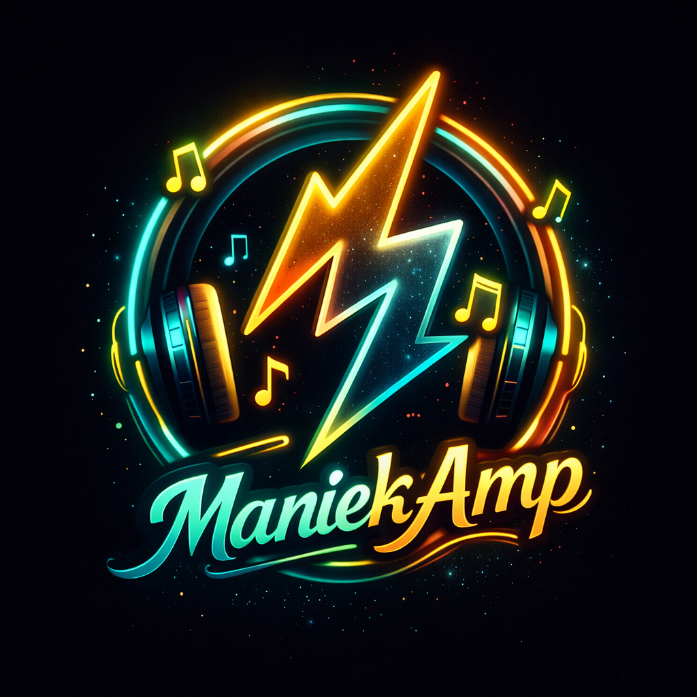

Nowoczesny odtwarzacz audio z mocą ⚡
📦 Pobierz APK
ManiekAmp to nowoczesny odtwarzacz audio stworzony z myślą o jakości i wygodzie.
Aplikacja została zaprojektowana tak, aby działać szybko, płynnie i bez zbędnych obciążeń dla Twojego urządzenia.
Najważniejsze funkcje:
• szybkie skanowanie i odtwarzanie muzyki
• intuicyjny i przejrzysty interfejs
• lekka konstrukcja – nie obciąża telefonu
• stabilne działanie bez lagów
• tryb audiofilski – czysty i dopracowany dźwięk
ManiekAmp to idealne rozwiązanie dla osób, które cenią prostotę, wydajność i wysoką jakość brzmienia.
ManiekAmp is a modern music player designed for performance, simplicity, and high-quality sound.
The app is optimized to run smoothly and efficiently without slowing down your device.
Key features:
• fast music scanning and playback
• clean and intuitive interface
• lightweight – minimal system usage
• stable performance with no lags
• audiophile mode – clean and refined sound
ManiekAmp is the perfect choice for users who value simplicity, speed, and premium audio quality.